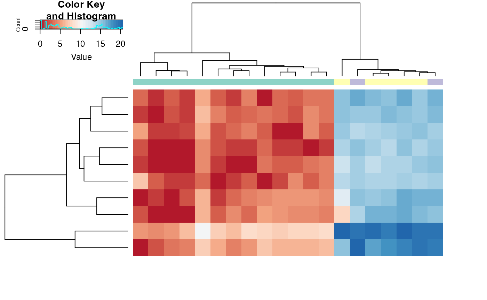

YARN: Robust Multi-Tissue RNA-Seq Preprocessing and Normalization
Joseph N. Paulson & John Quackenbush
2022-06-16
Source:vignettes/yarn.Rmd
yarn.RmdYARN - Yet Another RNa-seq package
The goal of yarn is to expedite large RNA-seq analyses using a combination of previously developed tools. Yarn is meant to make it easier for the user to perform accurate comparison of conditions by leveraging many Bioconductor tools and various statistical and normalization techniques while accounting for the large heterogeneity and sparsity found in very large RNA-seq experiments.
Installation
You can install yarn from github through netZooR with:
if (!requireNamespace("BiocManager", quietly=TRUE))
install.packages("BiocManager")
BiocManager::install("netZooR")Quick Introduction
If you’re here to grab the GTEx version 6.0 data then look no further than this gist that uses yarn to download all the data and preprocess it for you.
Preprocessing
Below are a few of the functions we can use to preprocess a large RNA-seq experiment. We follow a particular procedure where we:
- Filter poor quality samples
- Merge samples of similar conditions for increased power
- Filter genes while preserving tissue or group specificity
- Normalize while accounting for global differences in tissue distribution
We will make use of the skin dataset for examples. The skin dataset is a small sample of the full GTEx data that can be downloaded using the downloadGTEx function. The skin dataset looks like this:
skin## ExpressionSet (storageMode: lockedEnvironment)
## assayData: 40824 features, 20 samples
## element names: exprs
## protocolData: none
## phenoData
## rowNames: GTEX-OHPL-0008-SM-4E3I9 GTEX-145MN-1526-SM-5SI9T ...
## GTEX-144FL-0626-SM-5LU43 (20 total)
## varLabels: SAMPID SMATSSCR ... DTHHRDY (65 total)
## varMetadata: labelDescription
## featureData
## featureNames: 48350 48365 ... 7565 (40824 total)
## fvarLabels: ensembl_gene_id hgnc_symbol ... gene_biotype (6 total)
## fvarMetadata: labelDescription
## experimentData: use 'experimentData(object)'
## Annotation:This is a basic workflow. Details will be fleshed out:
- First always remember to have the library loaded.
library(netZooR)- Download the GTEx gene count data as an ExpressionSet object or load the sample skin dataset.
For computational reasons we load the sample skin data instead of having the user download the
- Check mis-annotation of gender or other phenotypes using group-specific genes
yarn::checkMisAnnotation(skin,"GENDER",controlGenes="Y",legendPosition="topleft")
- Decide what sub-groups should be merged
yarn::checkTissuesToMerge(skin,"SMTS","SMTSD")
- Filter lowly expressed genes
skin_filtered = yarn::filterLowGenes(skin,"SMTSD")
dim(skin)## Features Samples
## 40824 20
dim(skin_filtered)## Features Samples
## 19933 20Or group specific genes
tmp = yarn::filterGenes(skin,labels=c("X","Y","MT"),featureName = "chromosome_name")
# Keep only the sex names
tmp = yarn::filterGenes(skin,labels=c("X","Y","MT"),featureName = "chromosome_name",keepOnly=TRUE)- Normalize in a tissue or group-aware manner
yarn::plotDensity(skin_filtered,"SMTSD",main=expression('log'[2]*' raw expression'))
skin_filtered = yarn::normalizeTissueAware(skin_filtered,"SMTSD")
yarn::plotDensity(skin_filtered,"SMTSD",normalized=TRUE,main="Normalized")## normalizedMatrix is assumed to already be log-transformed
Helper functions
Other than checkMisAnnotation and checkTissuesToMerge we provide a few plotting function. We include, plotCMDS, plotDensity, plotHeatmap.
plotCMDS - PCoA / Classical Multi-Dimensional Scaling of the most variable genes.

plotDensity - Density plots colored by phenotype of choosing. Allows for inspection of global trend differences.
filtData = yarn::filterLowGenes(skin,"SMTSD")
yarn::plotDensity(filtData,groups="SMTSD",legendPos="topleft")
plotHeatmap - Heatmap of the most variable genes.
library(RColorBrewer)
tissues = pData(skin)$SMTSD
heatmapColColors=brewer.pal(12,"Set3")[as.integer(factor(tissues))]
heatmapCols = colorRampPalette(brewer.pal(9, "RdBu"))(50)
yarn::plotHeatmap(skin,normalized=FALSE,log=TRUE,trace="none",n=10,
col = heatmapCols,ColSideColors = heatmapColColors,cexRow = 0.25,cexCol = 0.25)
Information
## R version 4.1.1 (2021-08-10)
## Platform: x86_64-apple-darwin17.0 (64-bit)
## Running under: macOS Mojave 10.14.6
##
## Matrix products: default
## BLAS: /Library/Frameworks/R.framework/Versions/4.1/Resources/lib/libRblas.0.dylib
## LAPACK: /Library/Frameworks/R.framework/Versions/4.1/Resources/lib/libRlapack.dylib
##
## locale:
## [1] en_US.UTF-8/en_US.UTF-8/en_US.UTF-8/C/en_US.UTF-8/en_US.UTF-8
##
## attached base packages:
## [1] parallel stats graphics grDevices utils datasets methods
## [8] base
##
## other attached packages:
## [1] RColorBrewer_1.1-2 netZooR_1.0.4 yarn_1.18.0
## [4] pandaR_1.19.5 Biobase_2.52.0 BiocGenerics_0.38.0
## [7] reticulate_1.22 igraph_1.3.2
##
## loaded via a namespace (and not attached):
## [1] utf8_1.2.2 proto_1.0.0
## [3] R.utils_2.11.0 RUnit_0.4.32
## [5] tidyselect_1.1.1 RSQLite_2.2.8
## [7] AnnotationDbi_1.54.1 grid_4.1.1
## [9] BiocParallel_1.26.2 base64url_1.4
## [11] munsell_0.5.0 codetools_0.2-18
## [13] ragg_1.1.3 preprocessCore_1.54.0
## [15] chron_2.3-56 pbdZMQ_0.3-5
## [17] colorspace_2.0-2 Category_2.58.0
## [19] filelock_1.0.2 highr_0.9
## [21] dplR_1.7.2 knitr_1.36
## [23] uuid_0.1-4 stats4_4.1.1
## [25] MatrixGenerics_1.4.3 repr_1.1.3
## [27] GenomeInfoDbData_1.2.6 bit64_4.0.5
## [29] rhdf5_2.36.0 rprojroot_2.0.2
## [31] downloader_0.4 vctrs_0.3.8
## [33] generics_0.1.0 xfun_0.26
## [35] BiocFileCache_2.0.0 R6_2.5.1
## [37] doParallel_1.0.16 GenomeInfoDb_1.28.4
## [39] illuminaio_0.34.0 RJSONIO_1.3-1.6
## [41] locfit_1.5-9.4 bitops_1.0-7
## [43] rhdf5filters_1.4.0 cachem_1.0.6
## [45] reshape_0.8.8 DelayedArray_0.18.0
## [47] assertthat_0.2.1 BiocIO_1.2.0
## [49] scales_1.1.1 nnet_7.3-16
## [51] gtable_0.3.0 rlang_0.4.11
## [53] genefilter_1.74.0 systemfonts_1.0.2
## [55] splines_4.1.1 rtracklayer_1.52.1
## [57] GEOquery_2.60.0 hexbin_1.28.2
## [59] reshape2_1.4.4 yaml_2.2.1
## [61] backports_1.2.1 GenomicFeatures_1.44.2
## [63] RBGL_1.68.0 tools_4.1.1
## [65] nor1mix_1.3-0 ggplot2_3.3.6
## [67] ellipsis_0.3.2 gplots_3.1.1
## [69] jquerylib_0.1.4 ggdendro_0.1.22
## [71] siggenes_1.66.0 STRINGdb_2.4.1
## [73] gsubfn_0.7 hash_2.2.6.1
## [75] Rcpp_1.0.7 plyr_1.8.6
## [77] base64enc_0.1-3 sparseMatrixStats_1.4.2
## [79] progress_1.2.2 zlibbioc_1.38.0
## [81] purrr_0.3.4 RCurl_1.98-1.5
## [83] prettyunits_1.1.1 sqldf_0.4-11
## [85] openssl_1.4.5 bumphunter_1.34.0
## [87] S4Vectors_0.30.2 cluster_2.1.2
## [89] SummarizedExperiment_1.22.0 fs_1.5.0
## [91] magrittr_2.0.1 data.table_1.14.2
## [93] matrixStats_0.61.0 hms_1.1.1
## [95] evaluate_0.14 xtable_1.8-4
## [97] XML_3.99-0.8 mclust_5.4.7
## [99] IRanges_2.26.0 compiler_4.1.1
## [101] biomaRt_2.48.3 minfi_1.38.0
## [103] tibble_3.1.5 RCy3_2.12.4
## [105] KernSmooth_2.23-20 crayon_1.4.1
## [107] R.oo_1.24.0 htmltools_0.5.2
## [109] GOstats_2.58.0 mgcv_1.8-36
## [111] tzdb_0.1.2 tidyr_1.1.4
## [113] DBI_1.1.1 dbplyr_2.1.1
## [115] MASS_7.3-54 rappdirs_0.3.3
## [117] Matrix_1.3-4 readr_2.0.2
## [119] permute_0.9-5 quantro_1.26.0
## [121] uchardet_1.1.0 R.methodsS3_1.8.1
## [123] quadprog_1.5-8 GenomicRanges_1.44.0
## [125] pkgconfig_2.0.3 pkgdown_1.6.1
## [127] GenomicAlignments_1.28.0 signal_0.7-7
## [129] IRdisplay_1.0 xml2_1.3.2
## [131] foreach_1.5.1 annotate_1.70.0
## [133] penalized_0.9-51 bslib_0.3.1
## [135] rngtools_1.5 multtest_2.48.0
## [137] beanplot_1.2 XVector_0.32.0
## [139] AnnotationForge_1.34.0 doRNG_1.8.2
## [141] scrime_1.3.5 stringr_1.4.0
## [143] digest_0.6.28 vegan_2.5-7
## [145] graph_1.70.0 Biostrings_2.60.2
## [147] rmarkdown_2.11 base64_2.0
## [149] edgeR_3.34.1 DelayedMatrixStats_1.14.3
## [151] GSEABase_1.54.0 restfulr_0.0.13
## [153] curl_4.3.2 Rsamtools_2.8.0
## [155] gtools_3.9.2 rjson_0.2.20
## [157] lifecycle_1.0.1 nlme_3.1-152
## [159] jsonlite_1.7.2 Rhdf5lib_1.14.2
## [161] viridisLite_0.4.0 desc_1.4.0
## [163] askpass_1.1 limma_3.48.3
## [165] fansi_0.5.0 pillar_1.6.3
## [167] lattice_0.20-44 plotrix_3.8-2
## [169] KEGGREST_1.32.0 fastmap_1.1.0
## [171] httr_1.4.2 survival_3.2-11
## [173] GO.db_3.13.0 glue_1.4.2
## [175] png_0.1-7 iterators_1.0.13
## [177] bit_4.0.4 Rgraphviz_2.36.0
## [179] stringi_1.7.5 sass_0.4.0
## [181] HDF5Array_1.20.0 blob_1.2.2
## [183] textshaping_0.3.5 org.Hs.eg.db_3.13.0
## [185] caTools_1.18.2 memoise_2.0.0
## [187] IRkernel_1.2 dplyr_1.0.7